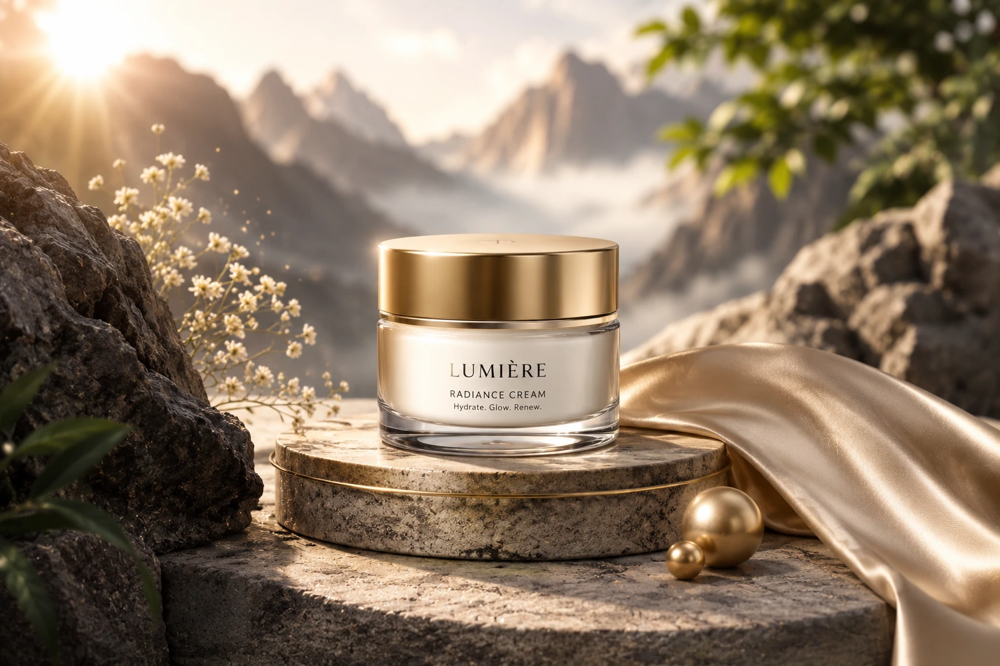
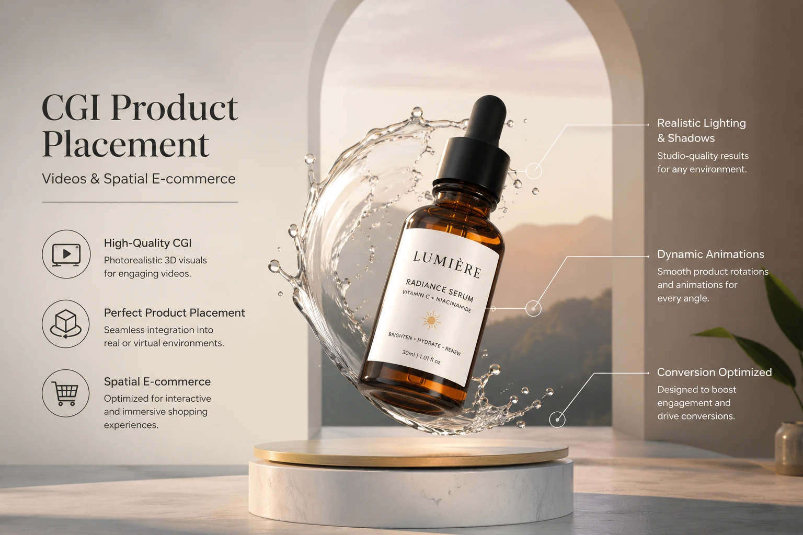

Merging Studio Product Photography with Hyper-Realistic 3D Environment Composites
When the Studio Is Not Enough
The white cyclorama wall, the gradient sweep, the controlled three-point lighting rig — the tools of the commercial product photography studio are precise, repeatable, and excellent at what they do: documenting a physical object under optimal conditions so that its material qualities are communicated with maximum clarity and accuracy. What the studio cannot do is place that object in a world that does not exist, at a scale that cannot be built, under lighting conditions that no physical environment can produce, within a visual narrative that communicates the brand's identity rather than merely the product's appearance.
3D environment product compositing is the production discipline that closes this gap — the process of capturing the real product in the controlled studio environment where it can be photographed at its absolute best, and then integrating that studio-quality capture into a three-dimensionally rendered world built, lit, and rendered with total creative freedom. The result is a visual asset in which the physical product and the synthetic environment are indistinguishable from a single photograph of a scene that was never actually built.
This is not a shortcut or a technical trick. It is a production methodology that combines the irreplaceable tactile authenticity of real product photography with the unlimited creative scope of advanced media tech — producing mixed reality digital ad assets, surreal commercial visual ads, spatial e-commerce graphics, and CGI product placement videos that achieve what neither discipline can produce alone. Understanding how this process works — and why the most technically demanding phase of the entire production happens before the camera is switched on — is the starting point for any brand considering this approach to its visual communication.
The Production Logic: Why Decoupling the Product from the Environment Changes Everything
Conventional commercial photography couples the product and the environment in a single photographic event — the product is placed in the physical environment, both are lit simultaneously, and the camera records the result. The quality of the final image is constrained by the quality of the physical environment that can be built or accessed, the compatibility of the lighting requirements of the product and the environment, and the logistical feasibility of placing the product in the intended context.
3D environment product compositing decouples these two elements, allowing each to be captured or created under the conditions that are optimal for that element alone — and then combined in a compositing workflow that makes the coupling invisible. The commercial implications of this decoupling are significant and extend across every dimension of a brand's visual content programme:
- The product is always captured at its absolute best. In a composite workflow, the studio shoot is designed entirely around the product's specific material and visual requirements — without any compromise necessitated by a simultaneously lit environment. A glass perfume bottle, a polished watch case, and a textile product each require fundamentally different lighting approaches; in a composite workflow, each is lit for itself alone, under the conditions that best communicate its specific material qualities, and then placed into the environment in post-production.
- The environment has no physical constraints. The 3D environment exists entirely in software and is therefore unconstrained by the physical world: it can be a landscape that does not exist, a space of impossible scale, a surreal architectural environment built from a brief that no location scout could ever fulfil. Surreal commercial visual ads that would require multi-million rupee set builds or international location shoots to produce physically are produced digitally at a fraction of the cost — with greater precision, greater repeatability, and greater creative control than any physical alternative.
- One product shoot, unlimited campaign variations. Once the studio product photograph exists at the required technical specification, it can be composited into an unlimited number of 3D environments — seasonal campaign variants, regional market adaptations, A/B test creative variations, platform-specific aspect ratio formats — without reshooting the product for each. The product capture is the fixed production investment; the environment production is the variable that scales to creative brief, budget, and distribution requirements.
- Technical consistency across an entire product range. For brands with large product catalogues — a jewellery collection of fifty pieces, a skincare range of thirty SKUs, an electronics lineup across multiple form factors — the composite workflow ensures that every product in the range is photographed under identical conditions and composited into environments with consistent visual treatment. The result is a campaign imagery system that has total visual coherence across the full catalogue — a level of consistency that multi-day, multi-location physical photography cannot reliably achieve.
The Studio Shoot for Compositing: How It Differs from Conventional Product Photography
The studio shoot in a 3D environment product compositing workflow is technically more demanding than a conventional product photography shoot — because it must capture not only the product itself but the precise technical data that the 3D production phase requires to build a rendered environment that is physically consistent with the photographic capture.
The technical requirements that differentiate a compositing-ready studio shoot from a conventional product shoot:
- Camera specification documentation for 3D matching. The focal length, sensor size, shooting distance, camera height, and angle of the studio capture must be recorded with precision — not estimated, but measured — because these parameters are the inputs used to build the matching virtual camera in the 3D software. A virtual camera that does not exactly match the physical camera produces a perspective mismatch between the product photograph and the rendered environment that is immediately visible in the composite and impossible to fully correct in post-production. Pre-production camera specification for a composite shoot is not a technical formality — it is the foundation on which the entire visual coherence of the finished image depends.
- HDRI capture of the studio lighting environment. An HDRI (High Dynamic Range Image) is a 360-degree spherical photograph of the studio environment, captured at the position of the product, that records the complete light information of the space — every light source, its direction, intensity, colour temperature, and the reflective contribution of every surface in the studio. This HDRI is used in the 3D rendering software to reproduce the studio's actual illumination on the rendered environment and any 3D elements that occupy the same composite space as the product — ensuring that the light falling on the virtual surfaces is physically consistent with the light that fell on the real product during the studio shoot.
- Shadow and reflection pass capture. In a composite, the product must cast shadows and produce reflections that are consistent with its position and the lighting in the rendered environment. These elements — the product's contact shadow on the surface beneath it, the reflection of the product in surrounding surfaces — are either captured in the studio shoot on a surface that will be used as a reference, or generated in the 3D render to match the studio lighting data, and composited into the final image separately from the product itself. The planning of shadow and reflection elements is a pre-production decision that determines which approach is used and how each is technically captured or generated.
- Premium product creative retouching before compositing. The studio photograph that enters the compositing workflow must be technically perfect — because every imperfection in the product capture is amplified by the composite process, which places the product against a rendered environment where surfaces are flawless by definition. Premium product creative retouching — dust removal, surface blemish correction, highlight and reflection optimisation, and the careful management of the product's material character — is completed on the studio photograph before it enters the compositing stage, ensuring that the final composite presents the product at the standard its visual context demands.

Building the 3D Environment: The Creative and Technical Architecture
The 3D environment in a combining real photos with 3D elements workflow is not a generic scene selected from a library — it is a purpose-built digital space designed specifically for the product, the campaign brief, and the technical parameters of the studio photograph it will receive. The creative and technical decisions made in building the environment determine the visual quality, the emotional impact, and the physical credibility of the finished composite.
The architectural components of a production-ready 3D environment for product compositing:
Scene Geometry and Spatial Structure
The three-dimensional geometry of the environment — its surfaces, volumes, architectural elements, and spatial relationships — is built with the product's physical dimensions and the studio camera's perspective parameters as fixed constraints. Every surface that the product will appear to rest on, be surrounded by, or be reflected in must be geometrically accurate relative to the product's scale and position in the studio photograph. A surface that is geometrically inconsistent with the product's apparent position creates a perspective discontinuity that immediately identifies the image as a composite rather than a photograph — the most fundamental failure in 3D environment product compositing.
Physically Based Rendering Materials
Every surface in the 3D environment is assigned a physically based rendering material — a digital material definition that describes how that surface reflects, absorbs, transmits, and scatters light in physical terms. Physically based materials respond to the HDRI studio lighting data in the same way real-world materials respond to real light, producing reflections, shadows, and subsurface effects that are physically accurate rather than artistically approximated. This physical accuracy is what makes the rendered environment visually credible as a real space — and what makes the composite of a real product photograph and a rendered environment seamless rather than apparent.
Environment Lighting and Atmosphere
The lighting within the 3D environment serves two simultaneous functions: it illuminates the rendered surfaces in a way that is visually consistent with the studio lighting data recorded in the HDRI, and it contributes to the creative visual language of the environment — the mood, the colour temperature, the atmospheric depth, and the spatial quality that communicate the brand's positioning and the campaign's emotional register. For surreal commercial visual ads, the environment lighting is the primary creative tool: an impossible golden haze, a deep twilight gradient, a luminous particle atmosphere — none of these exist in a physical studio, but all of them are achievable in a rendered environment with total control over every parameter.
Interactive Elements and 3D Props
The 3D environment may include rendered props, brand elements, or contextual objects that interact physically with the studio-photographed product — reflecting in its surfaces, casting shadows across it, or appearing to exist in the same physical space at the same scale. These interactive 3D elements are rendered with the same physically based materials and matched lighting as the environment itself, and their interaction with the product photograph is managed in the compositing phase through carefully matched shadow, reflection, and occlusion passes. The high-end jewelry rendering style frequently uses this technique to place rendered gemstone light effects, metallic surface glints, and particle environments in direct visual interaction with the photographed piece.
High-End Jewellery Rendering: Where the Discipline Reaches Its Highest Complexity
No product category tests the technical limits of 3D environment product compositing more rigorously than fine jewellery — and no product category demonstrates its creative potential more compellingly. The materials that define jewellery's visual appeal — polished precious metals, cut gemstones, pearls, enamel, pavé diamond settings — each have optical properties of extraordinary complexity: multi-layered reflectivity, subsurface light transmission, dispersion and spectral fire, and the interaction of multiple simultaneous light sources that defines the visual experience of a high-quality piece.
The high-end jewelry rendering style in a compositing workflow addresses these optical complexities through a combination of studio capture discipline and 3D rendering technique:
- Macro studio capture for gemstone and surface detail. The studio shoot for fine jewellery compositing uses macro lenses and precisely positioned light sources — often multiple small LED panels and fibre optic sources — to capture the gemstone's internal structure, the metal's surface grain, and the setting's micro-detail at a resolution that survives large-format output without loss of tactile quality. The colour and intensity of each light source is documented precisely for HDRI integration, because the position of every light source relative to the gemstone determines which facets are illuminated and which are in shadow — and this relationship must be reproduced exactly in the rendered environment for the composite to be physically coherent.
- Rendered gemstone light environment for fire and brilliance. The fire and brilliance of a cut gemstone — the spectral colour flashes that give a diamond or sapphire its visual energy — are produced by the light sources visible in the stone's environment. In a physical studio, these light sources are fixed and limited; in a rendered environment, additional light sources can be positioned specifically to produce the fire pattern that makes the stone most visually alive, while being physically consistent with the HDRI lighting data of the studio capture. The rendered environment effectively enhances the gemstone's optical performance beyond what a physical studio environment can produce — while remaining photorealistic rather than obviously synthetic.
- Metal surface interaction with the rendered environment. Polished gold and platinum are perfect mirrors: every surface in their environment is reflected in them. In a composite, this means that the rendered environment must appear in the metal's reflections — and those reflections must be geometrically and tonally consistent with the rendered environment that surrounds the product in the final image. This is one of the most technically demanding aspects of combining real photos with 3D elements for jewellery: the metal reflections were captured in the studio, reflecting the physical studio environment, but the final composite places the piece in a completely different rendered environment. Managing this reflection discrepancy — through a combination of retouching, rendered reflection passes, and compositing layer management — is one of the defining technical competencies of professional jewellery compositing.
CGI Product Placement Videos: Extending the Composite into Motion
The same production methodology that produces still mixed reality digital ad assets extends naturally into motion — CGI product placement videos in which a studio-photographed or separately filmed product is placed into a rendered 3D environment that moves around it, illuminates it from evolving angles, and creates a cinematic visual narrative that no physical video production could match at equivalent cost.
CGI product placement videos for commercial advertising differ from full CGI product animation in a critical respect: the product itself is real, captured photographically or filmically at the quality that only real-world capture can produce, while the environment, camera movement, and atmospheric effects are entirely rendered. This hybrid approach produces the material authenticity of a physically filmed product — the real surface texture, the real material response to light, the real physical presence that audiences have learned to distinguish from fully rendered products — within an environment of unlimited creative scope.
The production disciplines that differentiate professional CGI product placement videos from technically adequate but visually unconvincing attempts:
- Motion-matched camera tracking. When the 3D environment camera moves around a static product — circling it, pushing toward it, rising above it — the rendered camera motion must be physically consistent with the product's fixed position in space. This requires either a static product photograph composited with a fully animated rendered camera, or a filmed product sequence with a physically tracked camera whose movement data is transferred to the 3D software for exact reproduction. The latter approach — filming the product with a tracked physical camera and matching that camera movement in 3D — is the production methodology that produces the most visually seamless motion composites, because the physical relationship between the camera and the product is recorded rather than estimated.
- Dynamic lighting response across the camera move. As the virtual camera moves through the rendered environment, the light falling on both the rendered surfaces and the composited product photograph must change in a way that is physically consistent with the camera's new position relative to the light sources. Static product photographs composited into moving 3D environments require frame-by-frame lighting adjustment — often automated through a rendered lighting pass that is applied to the product layer as the camera moves — to prevent the product from appearing to be a fixed photographic element pasted into a moving scene.
- Spatial e-commerce graphics for interactive and immersive formats. Spatial e-commerce graphics extend the CGI product placement video methodology into interactive digital environments — augmented reality product previews, 360-degree product environments for web and app, and immersive format advertisements where the viewer's perspective changes the product's visual context in real time. These formats use the same composite production methodology as conventional video but deliver the rendered environment as a real-time interactive experience rather than a pre-rendered video file — requiring the 3D environment to be optimised for real-time rendering performance rather than offline render quality.

Advanced Media Tech in Commercial Visual Production: The Competitive Advantage
The brands that invest in advanced media tech — the production infrastructure, software capability, and cross-disciplinary expertise required to execute 3D environment product compositing at a professional level — gain a commercial visual advantage that is not incremental but categorical: they can produce imagery and video that competitors using conventional photography alone cannot produce at any budget, because the creative possibilities opened by the composite methodology do not exist in the physical world.
The specific competitive advantages that advanced media tech in compositing production delivers to brands that invest in it:
- Visual distinctiveness at scale. A brand whose product imagery consistently places real products in impossibly beautiful, surreal, or architecturally spectacular rendered environments builds a visual identity that is immediately distinguishable from competitors working within the conventions of studio and lifestyle photography. The composite aesthetic is not merely more impressive — it is categorically different, communicating a level of production ambition and brand confidence that raises the perceived premium of the product before a single specification has been read.
- Campaign agility without reshoot costs. A brand with a library of studio product photographs captured to compositing specification can respond to seasonal campaigns, competitive events, and marketing opportunities with new composite assets produced from existing photography — in days rather than weeks, and at a fraction of the cost of a new production. The studio shoot investment compounds over time rather than being consumed by a single campaign.
- Global and regional visual adaptability. A composite workflow allows the same product photograph to be placed into culturally or regionally specific environments for different market communications — an Indian market campaign composite that uses visual references resonant with the local audience, and a global campaign composite that uses a universally aspirational environment, both produced from the same studio product capture, delivering market-specific relevance without market-specific reshoots.
- Format-native asset production from a single source composite. The composite source file — the studio product photograph integrated with the 3D environment — can be rendered and delivered at any resolution, aspect ratio, and format required by the full distribution plan: homepage hero banner, full-page print advertisement, digital billboard, Instagram square post, Reel vertical frame, and catalogue thumbnail, all from the same composite, all at their native technical specifications. This is the delivery efficiency that makes mixed reality digital ad assets the production methodology of choice for brands managing multi-channel, multi-format visual communication programmes at scale.
Conclusion
The convergence of studio product photography and hyper-realistic 3D environment compositing is not a trend in commercial visual production — it is a permanent shift in what commercial visual production is capable of, and what the audiences it serves have come to expect from brands that take their visual communication seriously. The studio captures what is real. The 3D environment creates what is possible. The composite delivers both in a single image that is more persuasive than either could produce alone.
Premium product creative retouching, CGI product placement videos, surreal commercial visual ads, spatial e-commerce graphics, and the full discipline of combining real photos with 3D elements at a professional technical standard are the production competencies that determine which brands produce commercial imagery at the level their product quality deserves — and which brands produce imagery that their product quality has outgrown.
At The PhD Ads, we produce 3D environment product compositing and mixed reality digital ad assets for brands across India — from studio capture planning and HDRI documentation through 3D environment production, premium product creative retouching, and final composite delivery across every format the campaign requires — because we understand that the most powerful commercial image is not the one that most accurately records the product, but the one that most completely communicates why it deserves to be owned.
Key Topics
Ready to Place Your Product in a World Beyond the Studio?
At The PhD Ads, we produce professional 3D environment product composites and mixed reality digital ad assets for brands across India — from studio capture and premium retouching through rendered environment production and multi-format campaign delivery.
Email: team@e2o.in